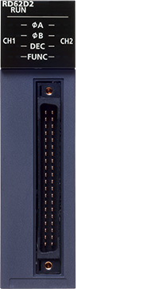
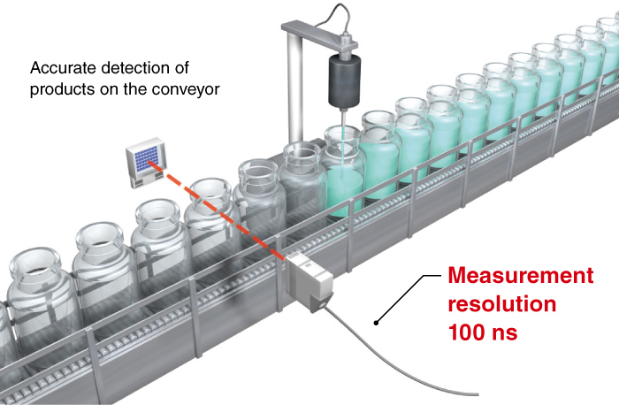
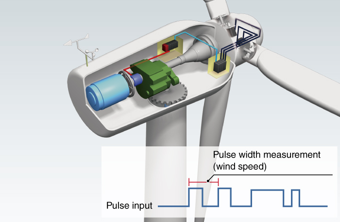

Controllers MELSEC iQ-R Series Product features -High-speed counter, Channel isolated pulse input, Flexible high-speed I/O control-

High-speed counter module
The high-speed counter modules are capable of up to 200k pulse/s for the DC input, and up to 8M pulse/s for differential input. The movement amount can also be measured when used with a rotary encoder, linear encoder, digital gage, etc. In addition, a signal is output when a specified position is reached.
For open collector/voltage output
For line driver

Max. 8M pulse/s2-channelCoincidence output (sink)
Features<sup>High-accuracy pulse measurement</sup>
- Measurement resolution 100 ns
- High-accuracy measurement
- The pulse measurement function enables measuring of the pulse cycle, which is ideal for applications where workpiece length and speed need to be detected
- In the food and beverage industry, the size and speed of bottles traveling on the conveyor are easily measured using proximity sensors
- Wind turbine speed can be measured from the pulse interval


Smooth operation with PWM output
- Max. 200 kHz
- Min. 100 ns pulse width
- The PWM output frequency can support up to 200 kHz with a minimum 100 ns pulse width (proportion to “on” time) during the required duty cycle
- The set values can be changed during operation without having to stop the system, such as in industrial-scale fan control
Specifications<sup>High-speed counter module specifications</sup>
| Item | RD62P2 | RD62P2E | RD62D2 |
|---|---|---|---|
| Number of channels | 2 | 2 | 2 |
| Count input signal | |||
| 1-phase input (1 multiple/2 multiples) | ● | ● | ● |
| 2-phase input (1 multiple/2 multiples/4 multiples) | ● | ● | ● |
| CW/CCW input | ● | ● | ● |
| Signal level (øA, øB) | 2…5 mA at 5/12/24 V DC | 2…5 mA at 5/12/24 V DC | EIA Standard RS-422-A Differential line driver level |
| Counter | |||
| Max. counting speed (pulse/s) | 200k | 200k | 8M |
| Counting range | 32-bit signed binary (-2147483648…2147483647) |
32-bit signed binary (-2147483648…2147483647) |
32-bit signed binary (-2147483648…2147483647) |
| External input | |||
| Preset, function start | 7…10 mA at 5/12/24 V DC | 7…10 mA at 5/12/24 V DC | 7…10 mA at 5/12/24 V DC |
| Digital filter (ms) | 0, 0.1, 1, 10 | 0, 0.1, 1, 10 | 0, 0.1, 1, 10 |
| Pulse measurement | |||
| Resolution*1 (ns) | 100 | 100 | 100 |
| Number of points per channel | 1 | 1 | 1 |
| External output | |||
| Coincidence output (2 points/channel) | Transistor (sink) output, 12/24 V DC, 0.5 A/point |
Transistor (source) output, 12/24 V DC, 0.1 A/point |
Transistor (sink) output, 12/24 V DC, 0.5 A/point |
| PWM output | |||
| Output frequency range (Hz) | DC…200k | DC…200k | DC…200k |
| Duty ratio | Multiples of 0.1 µs | Multiples of 0.1 µs | Multiples of 0.1 µs |
| Number of output points per channel | 2 | 2 | 2 |
| External interface*2 | |||
| 40-pin connector | ● | ● | ● |
- *1.Pulse measurement can be performed in the range of 2000 to 2147483647 (0.2 ms to approx. 214 s).
- *2.For applicable options, please refer to the relevant product manual.